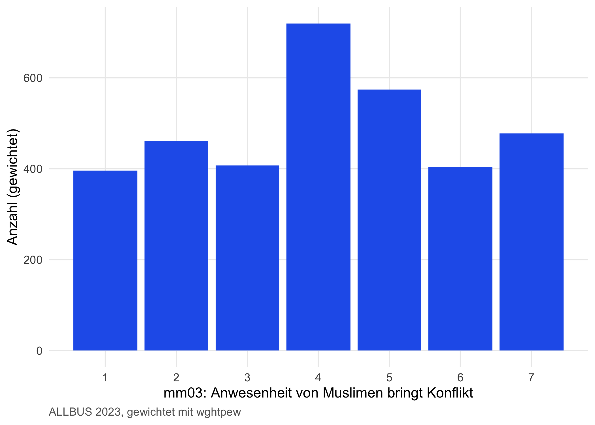
6 Visualisierung — Grundlagen
Wie zeige ich, was ich gefunden habe?
Mit diesem Kapitel kommst du zum eigentlichen Sichtbar-Machen deiner Befunde. Die folgenden Methoden-Kapitel — uni-/bivariate Analyse, latente Strukturen, Erklärungsmodelle — werden ausgiebig auf das hier Gelernte zurückgreifen. Du legst hier das Fundament, um Verteilungen, Gruppenvergleiche und Zusammenhänge zu visualisieren.
6.1 Worum es geht
Wenn deine Analyse fertig ist, ist die Hälfte der Arbeit getan — die andere Hälfte ist, sie zu kommunizieren. Grafiken sind dabei das mächtigste Werkzeug: ein gut gewähltes Diagramm beantwortet eine Forschungsfrage auf einen Blick, wo ein Absatz Fließtext drei Lese-Anläufe braucht.
Das tidyverse bietet dir mit ggplot2 ein Grafik-System, das aus einer konsistenten Grammatik komplexe Visualisierungen baut — die Grammar of Graphics. Du legst nicht einzelne Plot-Funktionen aufeinander wie in SPSS, sondern beschreibst, wie deine Daten welche visuellen Aspekte einer Grafik füllen sollen.
Dieses Kapitel führt dich durch das ggplot2-System: die Grammar of Graphics, mit der du jede Grafik in drei Schritten beschreiben kannst — Daten, Aesthetic Mapping, Layer. Du lernst, welche geom_*()-Variante zu welchem Datentyp passt, wie du Subgruppen mit Facets aufteilst und wie du Farben, Themes und Beschriftungen anpasst. Die fortgeschritteneren Visualisierungs-Themen (Coefficient-Plots, Multi-Plot-Komposition, Speichern in publikationsfähiger Qualität) folgen in Kapitel 9 am Ende des Methoden-Pfads — dort, wo wir konkrete Modellergebnisse darstellen wollen.
Was du nach diesem Kapitel kannst
- Den Grammar of Graphics-Ansatz von ggplot2 erklären.
- Häufigkeiten, Verteilungen und Zusammenhänge mit den passenden
geom_*()-Schichten visualisieren. - Subgruppen mit
facet_wrap()undfacet_grid()aufteilen. - Farben, Themes und Beschriftungen anpassen — inklusive lesbarer Achsenlabels über
to_label(). - Das buchweite Theme
theme_rworkshop()einordnen.
6.2 Die Grammar of Graphics
Jede ggplot2-Grafik folgt demselben Aufbau:
- Datengrundlage — welcher Datensatz?
- Aesthetic Mapping — welche Spalten füllen welche visuellen Eigenschaften (x, y, Farbe, Form, Gewicht)?
-
Layer (
geom_*) — was wird gezeichnet? Balken, Punkte, Linien, Boxen?
Jede Schicht kommt mit + dazu — das ist kein tidyverse-Pipe, sondern ggplot2-eigen.
Hinweis
Hintergrund: Wer hat die Grammatik erfunden? Leland Wilkinson formulierte 2005 in The Grammar of Graphics die Idee, jede statistische Grafik aus einer kleinen Zahl orthogonaler Komponenten zusammenzubauen. Hadley Wickham implementierte das 2007 als ggplot (später ggplot2) in R. Heute ist die Grammar Standard auch in Python (plotnine), JavaScript (Observable Plot) und vielen kommerziellen Tools — wer einmal in einem System gelernt hat, in welchen Schichten eine Grafik denkt, kann sie in allen lesen.
6.2.1 Erste Grafik: Häufigkeitsverteilung eines Items
Frage: Wie verteilen sich die Antworten auf das Item mm03 („Anwesenheit von Muslimen bringt Konflikt”)?
Lesart. Die Skala läuft von 1 („stimme gar nicht zu”) bis 7 („stimme voll und ganz zu”). Die Verteilung zeigt, in welche Richtung die Befragten tendieren.
6.2.2 Zweite Grafik: Subgruppen-Vergleich
Frage: Wie unterscheidet sich Islamfeindlichkeit nach Bildungsniveau?
allbus |>
filter(!is.na(islamophobie), !is.na(educ_kat)) |>
ggplot(aes(x = educ_kat, y = islamophobie, fill = educ_kat)) +
geom_boxplot(alpha = 0.7) +
labs(x = "Bildungsgruppe", y = "Islamfeindlichkeit (1–7)",
caption = "ALLBUS 2023") +
scale_fill_brewer(palette = "Blues") +
theme(legend.position = "none")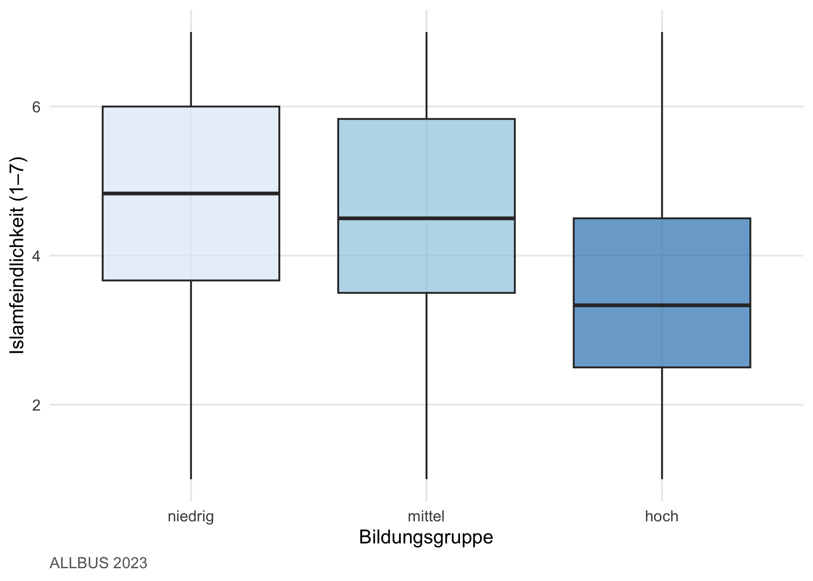
Beide Grafiken folgen dem gleichen Drei-Schritt-Aufbau. Den schauen wir uns jetzt im Detail an.
6.3 Aufbau einer Grafik
6.3.1 Plot-Objekt erstellen
Das Plot-Objekt entsteht mit ggplot(). Erstes Argument ist der Datensatz:
g <- allbus |> ggplot()Allein ist g ein „leeres” Plot-Objekt — es weiß noch nichts über Achsen oder Inhalte.
6.3.2 Aesthetic Mapping
Mit aes() ordnest du Spalten des Datensatzes den visuellen Eigenschaften der Grafik zu. Die wichtigsten Eigenschaften:
| Argument | Wozu |
|---|---|
x =, y =
|
Achsen |
weight = |
Survey-Gewichtung |
fill = |
Füllfarbe (Flächen — Balken, Boxen) |
colour = |
Linien- oder Punktfarbe |
shape = |
Punktform |
linetype = |
Strichstil |
size =, alpha =
|
Größe / Transparenz |
group = |
unsichtbare Gruppierung |
Wichtig: Wenn aes() innerhalb von ggplot() steht, gilt das Mapping für alle Layer der Grafik. Du kannst Mappings auch pro Layer setzen — dann gelten sie nur dort.
g ist jetzt ein Plot-Objekt mit Achsenzuweisungen — du siehst aber noch nichts, weil kein Layer existiert.
6.3.3 Layer hinzufügen
Layer kommen mit + dazu. Die Layer-Funktionen beginnen alle mit dem Präfix geom_.
Punktdiagramm / Jitter:
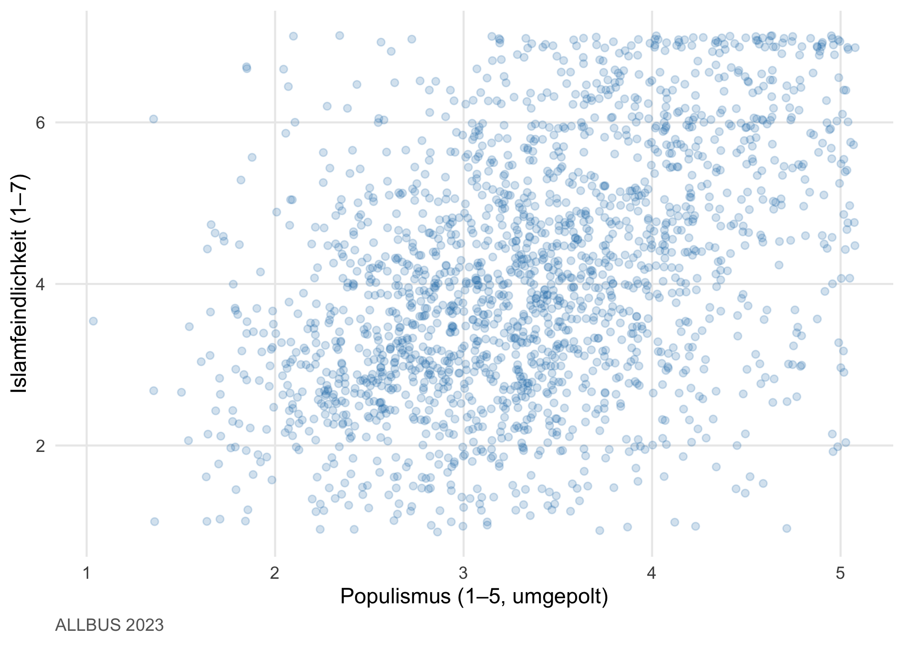
geom_jitter() verteilt überlappende Punkte leicht — das ist bei zwei diskreten Achsen (Skalen mit wenigen Ausprägungen) unverzichtbar, sonst sehen alle Befragten wie ein Punkt aus.
Boxplot und Violinplot:
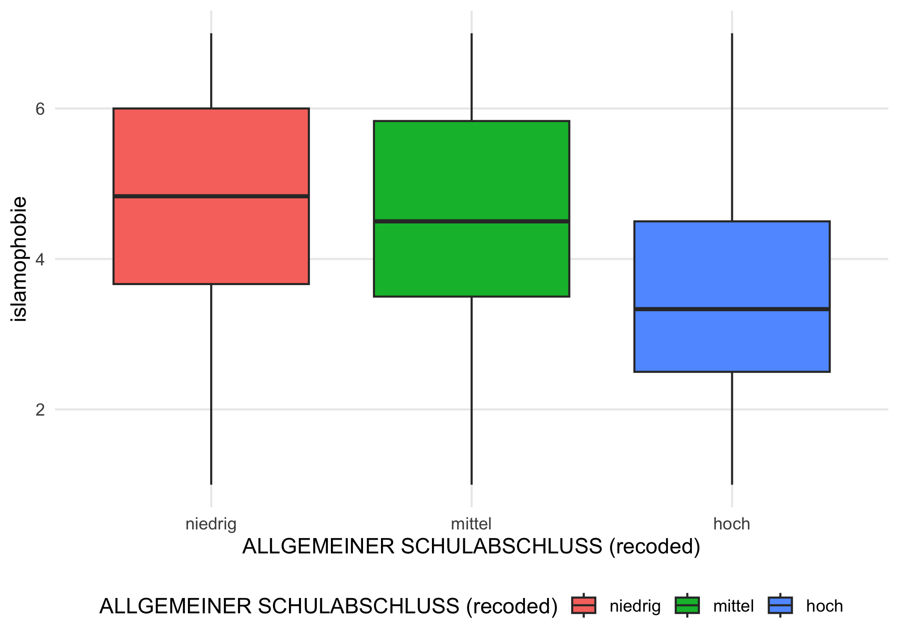
Boxplots zeigen Median (Linie in der Box), die mittleren 50 % (Box) und Whisker (1.5 × IQR). Violinplots zeigen stattdessen die Dichte:
g_base + geom_violin()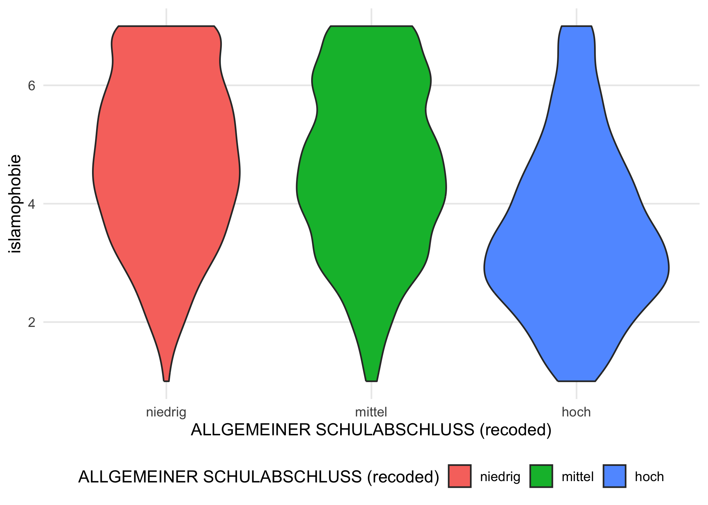
Ein häufiger Trick: beide Schichten kombinieren — Violin als Hintergrund, dünnen Boxplot darüber:
g_base +
geom_violin(alpha = 0.4) +
geom_boxplot(width = 0.1, fill = "white") +
theme(legend.position = "none")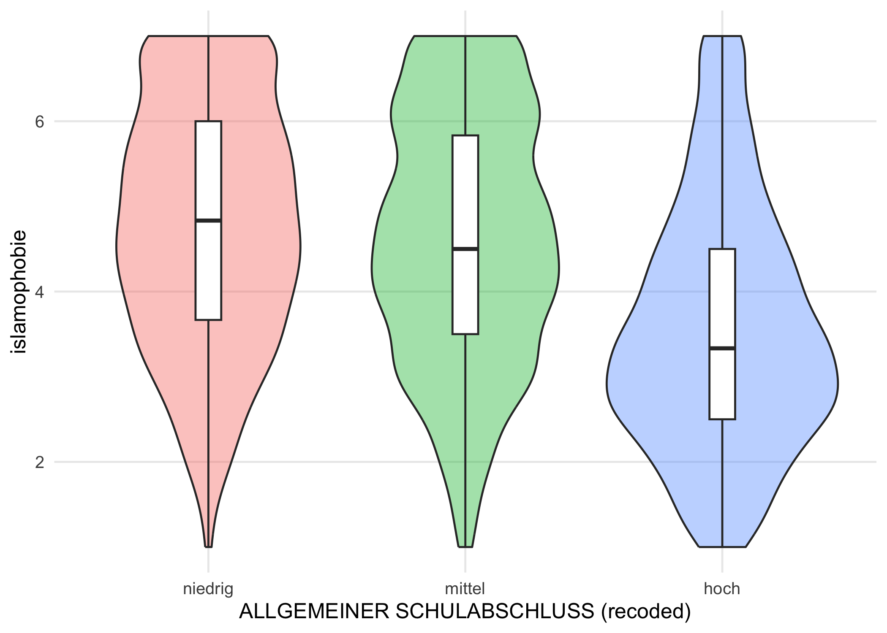
6.4 Geoms für verschiedene Datentypen
Welches geom_* sinnvoll ist, hängt vom Datentyp der Variablen ab. Eine Schnellübersicht:
| Datentyp | Empfohlene Geoms |
|---|---|
| Eine kategoriale Variable | geom_bar() |
| Eine kontinuierliche Variable |
geom_histogram(), geom_density()
|
| Zwei kategoriale Variablen |
geom_bar(position = "dodge") oder position = "fill"
|
| Eine kategoriale + eine kontinuierliche |
geom_boxplot(), geom_violin()
|
| Zwei kontinuierliche Variablen |
geom_point(), geom_jitter(), geom_smooth()
|
| Zeitreihe | geom_line() |
6.4.1 Eine kategoriale Variable
Klassischer Bar Chart mit geom_bar():
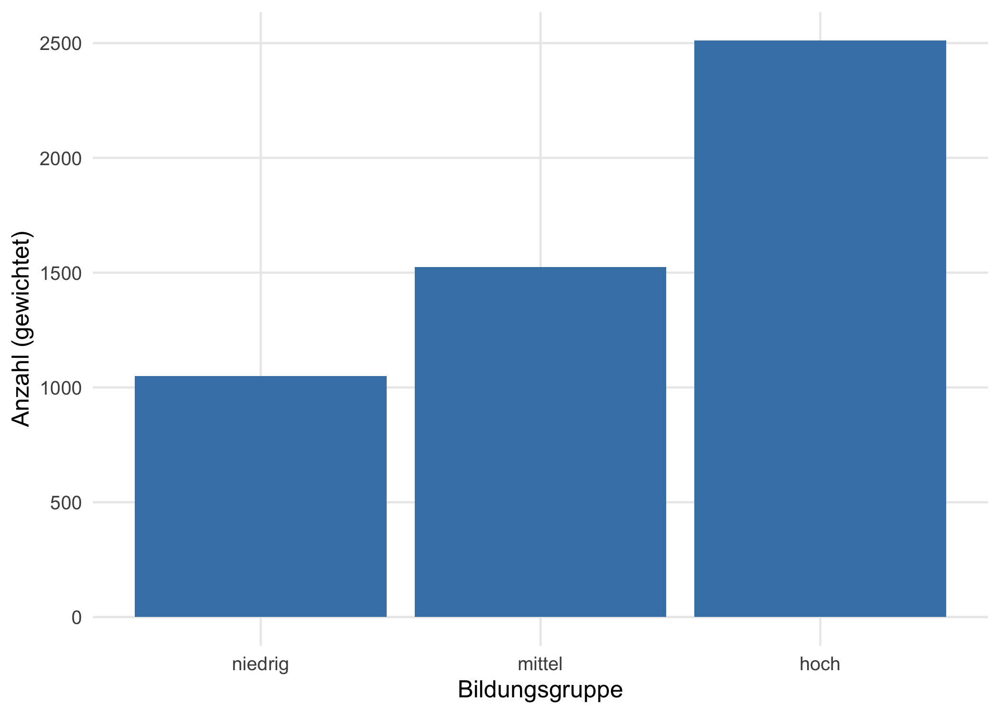
Relative Häufigkeiten. In modernem ggplot2 (ab Version 3.4) benutzt du after_stat() statt der alten ..count../..prop..-Syntax:

Mit fill = als zweiter Gruppierungsvariable bekommst du gestapelte Balken — und mit position = "dodge" nebeneinander:
6.4.2 Eine kontinuierliche Variable
Histogramm mit geom_histogram(). Die wichtigste Stellschraube ist binwidth:
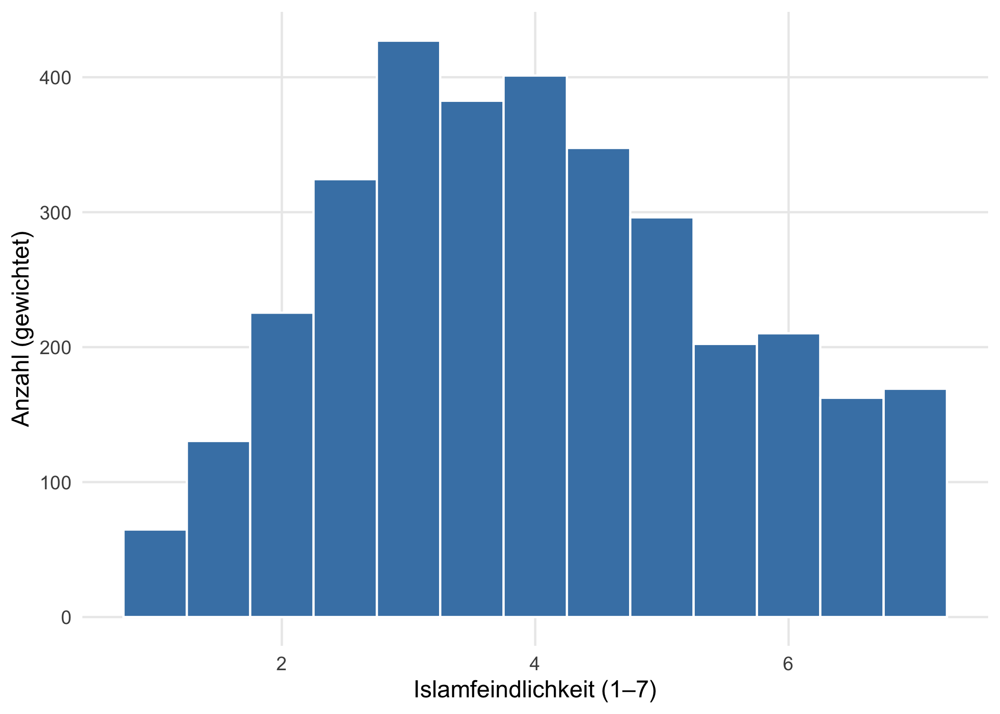
Mit geom_density() bekommst du stattdessen eine geglättete Dichteschätzung:

6.4.3 Zwei kontinuierliche Variablen
Streudiagramm mit Regressionsgerade — der Klassiker:
allbus |>
filter(!is.na(islamophobie), !is.na(populismus), !is.na(sex)) |>
ggplot(aes(x = populismus, y = islamophobie, color = sex)) +
geom_jitter(alpha = 0.2, width = 0.05, height = 0.05) +
geom_smooth(method = "lm", se = TRUE) +
labs(x = "Populismus", y = "Islamfeindlichkeit",
color = "Geschlecht", caption = "ALLBUS 2023")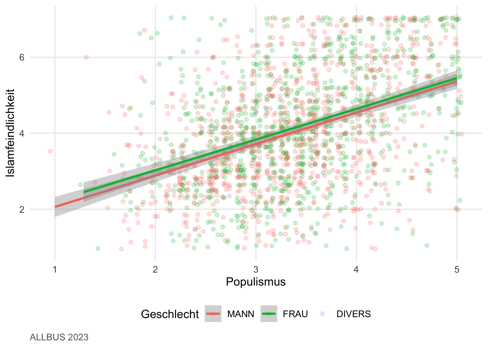
geom_smooth(method = "lm") zeichnet eine lineare Regressionsgerade pro Gruppe. Für nichtlineare Trends nutzt du method = "loess".
6.5 Subgruppen aufteilen mit Facets
Wenn eine Gruppierungsvariable mehr als drei oder vier Ausprägungen hat, wird die Überlagerung in einer Grafik unübersichtlich. Mit facet_wrap() bekommt jede Ausprägung ihr eigenes Panel:
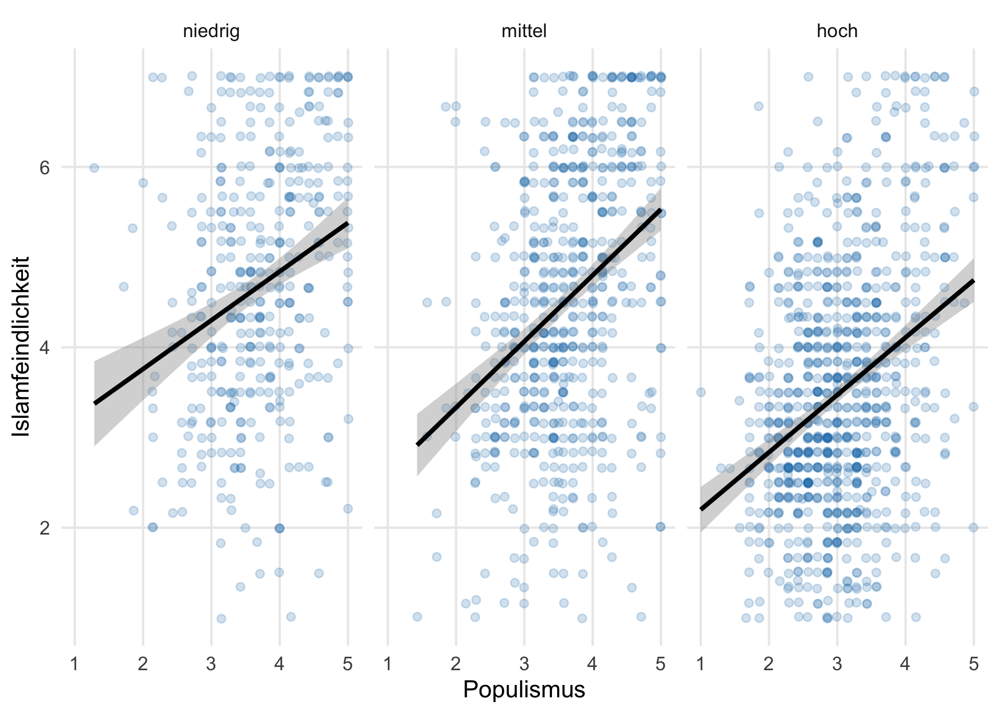
Bei zwei Gruppierungsvariablen ist facet_grid() die richtige Wahl — Zeilen × Spalten:
allbus |>
filter(!is.na(islamophobie), !is.na(populismus),
!is.na(educ_kat), !is.na(eastwest)) |>
ggplot(aes(x = populismus, y = islamophobie)) +
geom_jitter(alpha = 0.2, color = "#1f77b4") +
geom_smooth(method = "lm", color = "black") +
facet_grid(eastwest ~ educ_kat) +
labs(x = "Populismus", y = "Islamfeindlichkeit")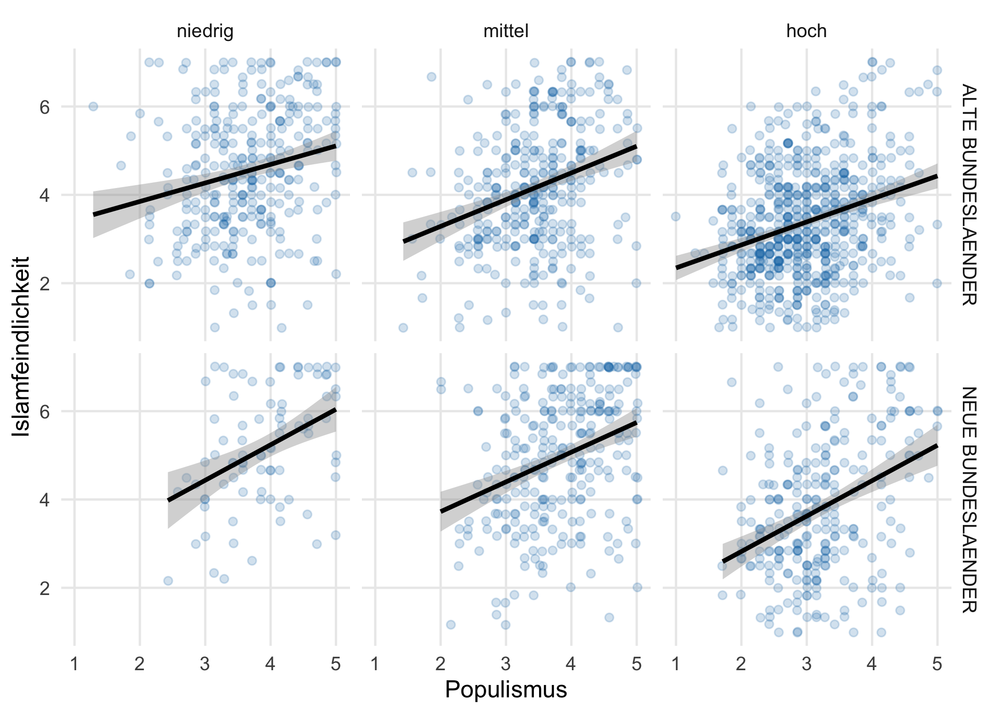
Hinweis
Reviewer-Hinweis. Facets sind in Publikationen aussagekräftiger als Tabellen mit Subgruppen-Statistiken. Wenn du in der Diskussion zeigen willst, dass ein Zusammenhang in einer Subgruppe stärker ist als in einer anderen, ist facet_wrap oder facet_grid das Werkzeug der Wahl — auf einen Blick sichtbar.
6.6 Farben und Themes
Der Default-Farbverlauf von ggplot2 ist nicht barrierefrei. Eine kleine Sammlung Standard-Lösungen:
# Diskrete kategoriale Variablen — Brewer-Paletten
scale_color_brewer(palette = "Set1") # für Linien/Punkte
scale_fill_brewer(palette = "Blues") # für Flächen
# Kontinuierlich — Viridis (barrierearm)
scale_color_viridis_c()
scale_fill_viridis_c()
# Eigene Palette
farben <- c("#2563eb", "#16a34a", "#dc2626")
scale_color_manual(values = farben)
Hinweis
Hintergrund: Barrierefreiheit. Etwa 8 % der Männer (und 0.5 % der Frauen) haben eine Form der Rot-Grün-Sehschwäche. Default-Farbpaletten verwenden oft Rot und Grün als Hauptkontrast — für betroffene Leser:innen verschwindet damit die Information. Viridis (Standardpalette in matplotlib, jetzt auch in ggplot2) bleibt für alle Sehschwächen unterscheidbar und ist auch in Schwarzweiß-Druck lesbar. Faustregel: bei kontinuierlichen Skalen immer Viridis, bei kategorialen Variablen aus ColorBrewer-Paletten wählen (Set1, Set2, Blues, RdYlBu).
Komplette Themes ersetzen mit einer Zeile das Standard-Aussehen:

theme_bw(), theme_classic(), theme_dark(), theme_void() sind weitere Optionen.
Wichtig
mariposa-Tipp / theme_rworkshop(). Alle Grafiken in diesem Buch nutzen automatisch das Theme theme_rworkshop(), das in R/_common.R definiert und per theme_set() global gesetzt ist. So sehen alle Plots im Quarto-Projekt einheitlich aus, ohne dass du das Theme in jedem Chunk explizit angeben musst. Für dein eigenes Projekt definierst du dir ein passendes Theme einmal und referenzierst es per source("R/_common.R") aus jedem Kapitel-Setup-Chunk.
Tipp
SPSS → R: Klick vs. Code. In SPSS klickst du Farben in einem Dialogfeld an, und die nächste Grafik fängt wieder bei Null an. In ggplot2 speicherst du Theme und Farbpalette als Code — und kannst sie auf jede neue Grafik anwenden, ohne dich zu wiederholen.
6.7 Beschriftungen
labs() setzt alle Texte einer Grafik in einem Funktionsaufruf:
allbus |>
filter(!is.na(islamophobie), !is.na(populismus)) |>
ggplot(aes(x = populismus, y = islamophobie)) +
geom_jitter(alpha = 0.2, color = "#1f77b4", width = 0.05, height = 0.05) +
geom_smooth(method = "lm", color = "black") +
labs(
title = "Islamfeindlichkeit und Populismus in Deutschland 2023",
subtitle = "Bivariater Zusammenhang, ungewichtet",
x = "Populismus (1–5, umgepolt)",
y = "Islamfeindlichkeit (1–7)",
caption = "Quelle: ALLBUS 2023, GESIS Leibniz-Institut"
)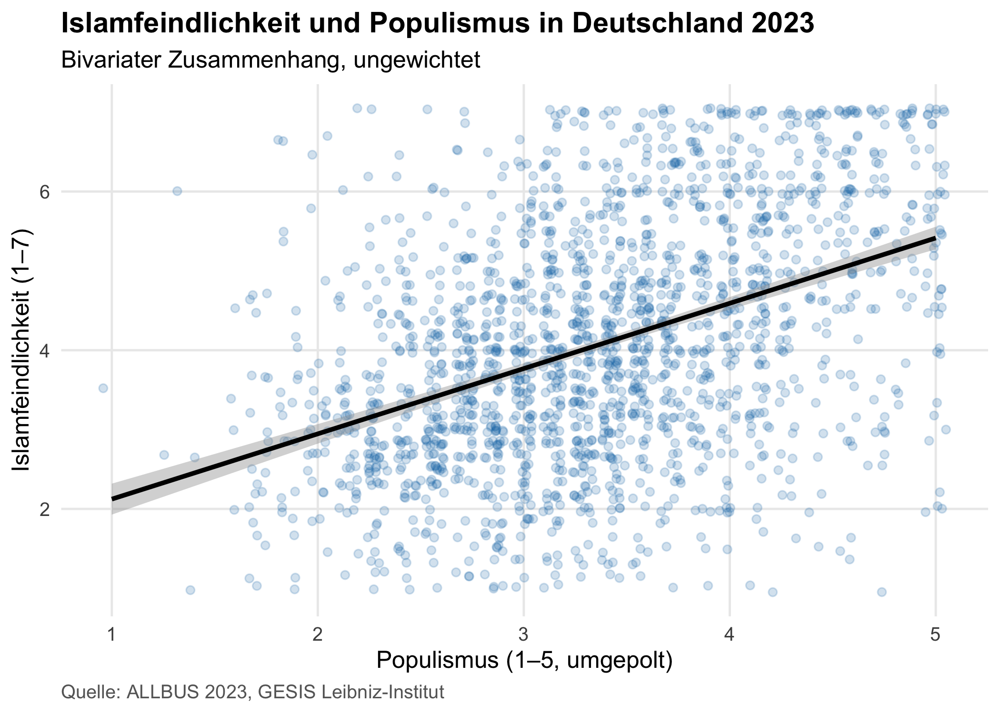
Lesbare Achsen über to_label(). Bei <haven_labelled>-Variablen aus SPSS willst du im Plot meist die Wertelabels sehen, nicht die numerischen Codes. Im Setup-Chunk dieses Kapitels haben wir genau das gemacht — to_label(eastwest, sex) hat die beiden Variablen in Faktoren verwandelt:
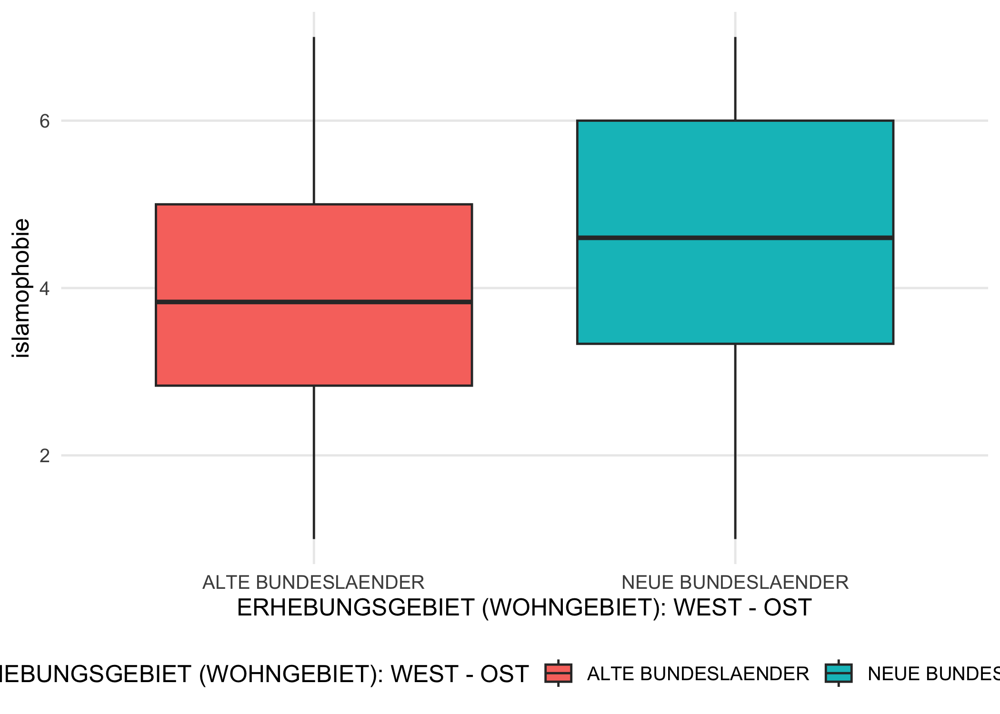
# Achse zeigt jetzt 'Alte Bundeslaender' / 'Neue Bundeslaender'
# statt 1 / 2 — weil eastwest schon im Setup-Chunk to_label-konvertiert wurde.Wenn du eine zusätzliche labelled-Variable im Plot brauchst, wendest du to_label() einfach in der Pipeline an, bevor du ggplot() aufrufst.
Übungen
Tipp
Übung 1 — Eigene Verteilung (Reproduktion). Erstelle ein Histogramm der Populismus-Skala (populismus) mit Binwidth 0.25, gewichtet, mit eigenem Titel und Achsenbeschriftung.
Lösung:
Tipp
Übung 2 — Subgruppen-Boxplot mit Facets (Reproduktion). Erstelle einen Boxplot der Islamfeindlichkeit nach eastwest, gefiltert nach Bildungsgruppen educ_kat (per facet_wrap).
Lösung:
Tipp
Übung 3 — Dichteplot mit zwei Gruppierungen (Transfer). Erstelle einen Dichteplot (geom_density) der Islamfeindlichkeit, eingefärbt nach eastwest, und teile das Ganze mit facet_wrap nach educ_kat auf. Wo liegen die größten Unterschiede zwischen Ost und West?
Lösung:
Tipp
Übung 4 — Eigene Visualisierung. Wähle aus dem ALLBUS 2023 eine politik-/sozialwissenschaftlich interessante Frage und visualisiere sie. Beispiele: Wie verteilt sich Demokratiezufriedenheit (ps03)? Hängt Lebenszufriedenheit (ls01) mit Alter zusammen? Achte auf: passender Geom-Typ, gewichten falls deutschlandweit (weight = wghtpew), lesbare Achsen, aussagekräftige Caption.
Keine Musterlösung — bewerte deine Grafik daran, ob sie eine konkrete Frage in ≤ 10 Sekunden beantwortet.
Was du jetzt weißt
- Du baust ggplot2-Grafiken in drei Schritten: Daten, Aesthetic Mapping, Layer.
- Du wählst passende
geom_*-Schichten nach Datentyp (kategorial/kontinuierlich, eine/zwei Variablen). - Du teilst Subgruppen mit
facet_wrap()undfacet_grid()auf. - Du benutzt Brewer- und Viridis-Paletten für barrierearme Farbgebung.
- Du kennst
theme_rworkshop()als buchweites Default-Theme und kannst es in eigene Projekte übernehmen. - Du setzt Variablenlabels auf Achsen über
to_label()für lesbare Beschriftungen.
In den folgenden Methoden-Kapiteln nutzt du diese Grundlagen sofort: in Kapitel 7 zur Verteilungs- und Gruppen-Visualisierung, in Kapitel 9 für Coefficient-Plots und Multi-Plot-Kompositionen.
Weiterführend
- Hadley Wickham et al., ggplot2 Reference — Funktionsreferenz mit Beispielen für jede
geom_*undscale_*. - R Graph Gallery — Inspiration und Cookbook für tausende Grafiktypen.
- Claus Wilke, Fundamentals of Data Visualization — Theorie der Datenvisualisierung, frei online.
- Cédric Scherer, A ggplot2 Tutorial for Beautiful Plotting in R — fortgeschrittene Customisierung.